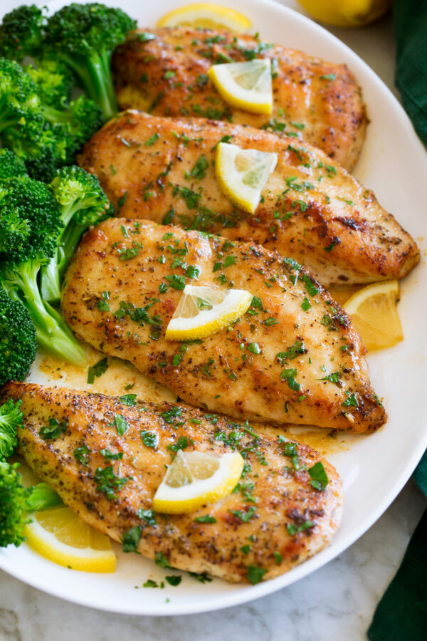

Lemon Pepper Chicken

Description
It’s the perfect dish to make when you need dinner in a flash. For a few healthy and hassle-free sides, pair it with
baked red potatoes (serve with a splash of olive oil) and fresh steamed broccoli.
Ingredients
- Chicken breasts
- Flour
- Italian seasoning
- Coarse ground black pepper
- Salt
- Garlic powder
- Sugar
- Butter
- Olive Oil
- Lemon
- Parsley
Directions:
- In a mixing bowl whisk together flour, Italian seasoning, pepper, salt, garlic powerder, and sugar.
- Evenly sprinkle and press mixture over both sides of chicken.
- Melt 1 Tbps butter with olive oil in a 12-inch non-stick skillet over medium-high heat. Tilt pan to evenly coat with butter mixture.
- Add chicken, let cook until golden brown on bottom, about 5 minutes.
- Flip pieces then let chicken continue to cook until cooked through in center. It should reach 165 degrees, about 5 minutes longer. Melt 2 Tbsp butter in with chicken just near the end.
- Remove from heat and pour lemon juice into skillet along with lemon zest. Turn chicken pieces to coat in lemon butter mixture.
- Sprinkle with parsley and serve warm.